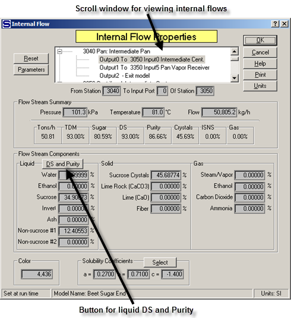
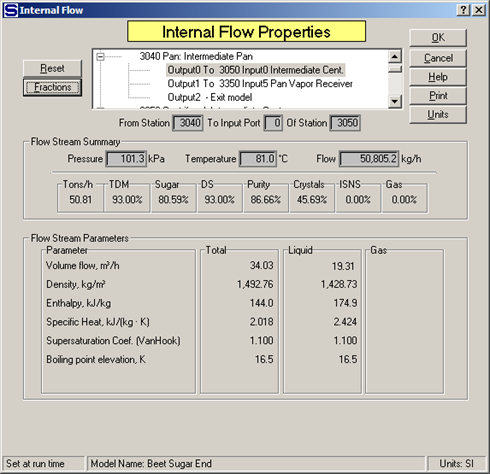

Internal flows are flows that connect stations, or that go out of the model. The characteristics of all internal flows are calculated by Sugars. Double click on any internal flow to get the Internal Flow Properties window as shown below. All of the internal flows in a model can be viewed using the scroll window and the data for each one can be reviewed by simply highlighting the flow in the scroll window.

Properties for the internal flow include the station number of the station where the internal flow originates and the input port and station number of where the flow goes. Next, the pressure, temperature and flow rate quantity (weight units per hour) are given. The line below the pressure, temperature and flow values gives the values for: Tons/h = flow rate in tons per hour, TDM = % total dry matter, Sugar = % sugar (both dissolved and crystalline), DS = % dry substance (includes sucrose crystals, if any), Purity = purity including both dissolved and sucrose crystals (if any), Crystals = % sucrose crystals, ISNS = % insoluble solid non-sugars and Gas = % gas. The liquid, solid and gas phase components are listed next and then the color and solubility coefficients for the flow are displayed.
A DS and Purity button in the liquid phase block can be used to display the % dry substance and purity of the liquid portion of the flow. For example, if the flow is a massecuite, left clicking the mouse on the button will cause Sugars to display the % dry substance and purity of the mother liquor.
The Reset button is used to reset all values to 0.0 for the internal flow being displayed. This is helpful if the model has a loop that causes the flow stream quantity to increase with each iteration until the quantity is out of range. The reset button allows the flow to be set back to 0.0 and then a change can be made to the model to prevent a reoccurrence of the problem. It is not necessary to reset all flows in a model that are out of range because Sugars will automatically reset out of range flows during the next iteration; however, the cause of the out of range problem will need to be corrected before the model will balance.
The Parameters button is used to display other characteristics of the flow as shown in the diagram below.

When the parameters are being displayed, the Fractions button is used to change the display back to show the flow stream component fractions. Parameters and flow stream component fractions are available for every flow stream in the model.